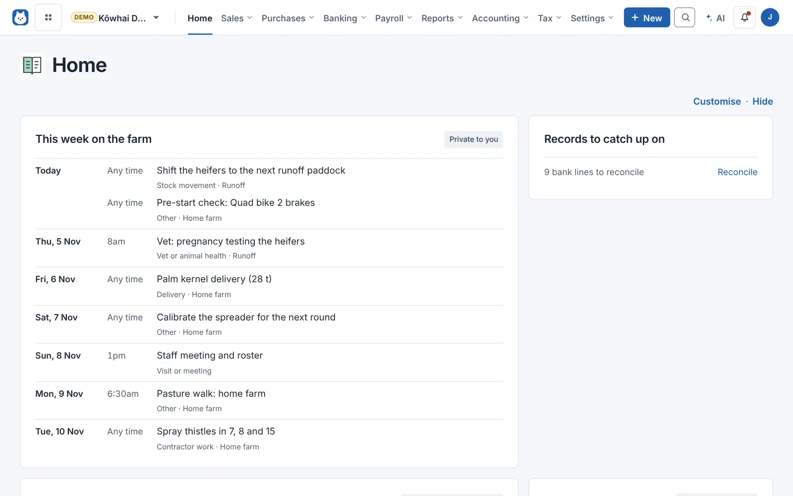
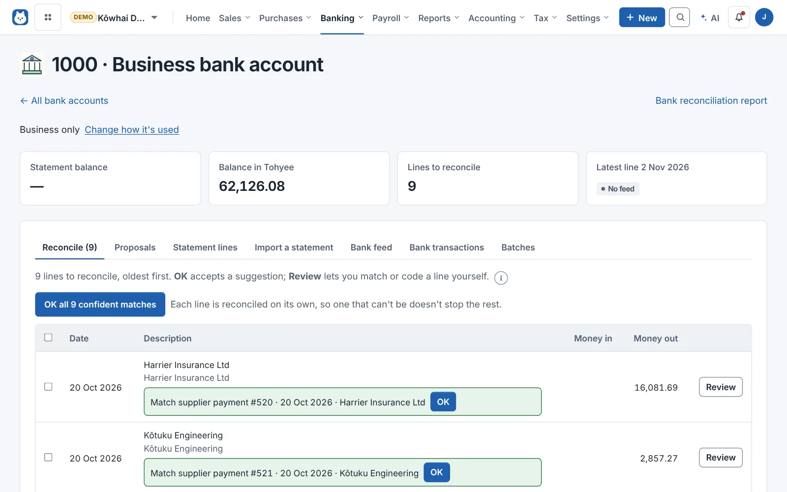
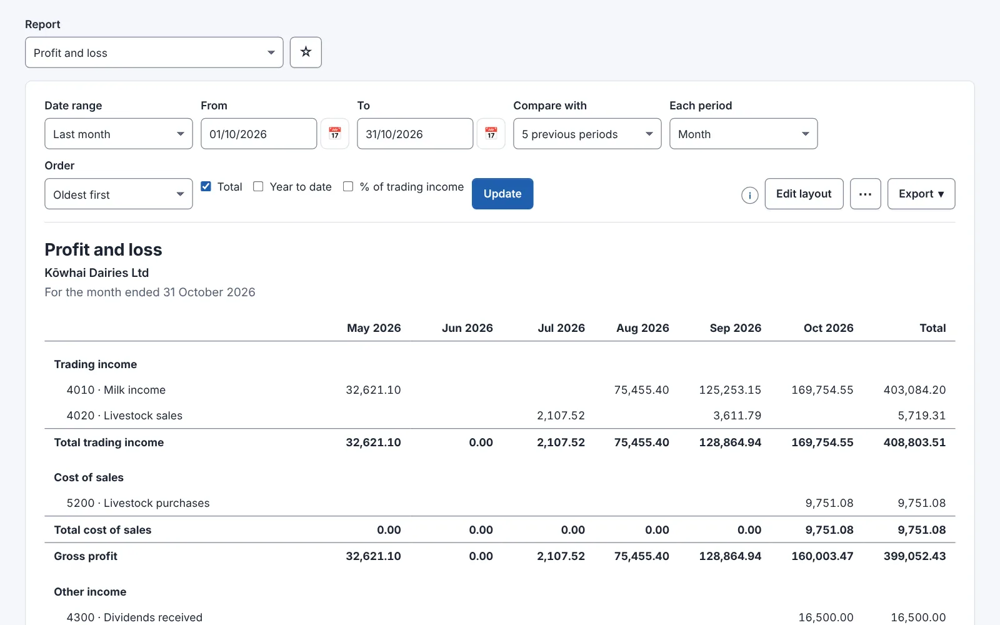
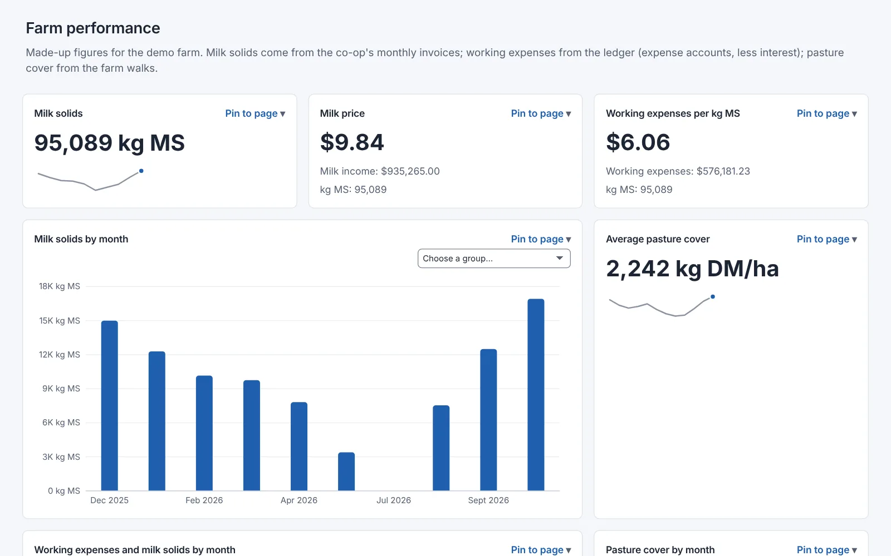
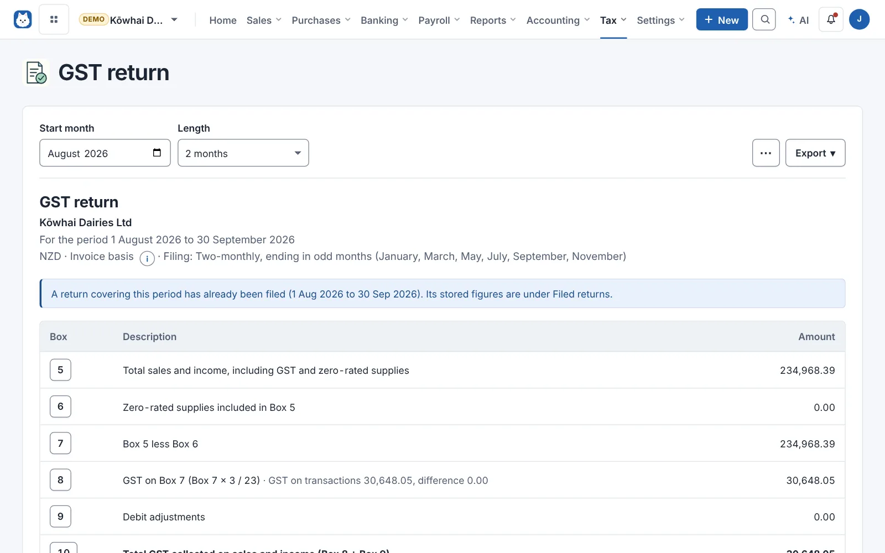
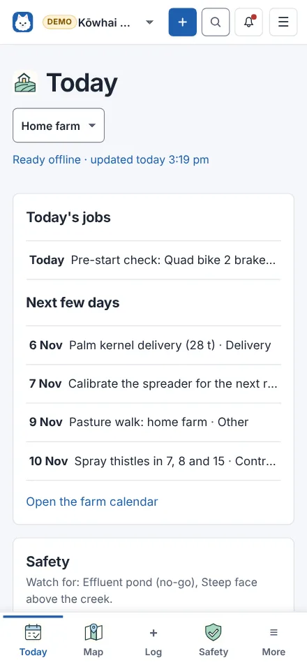
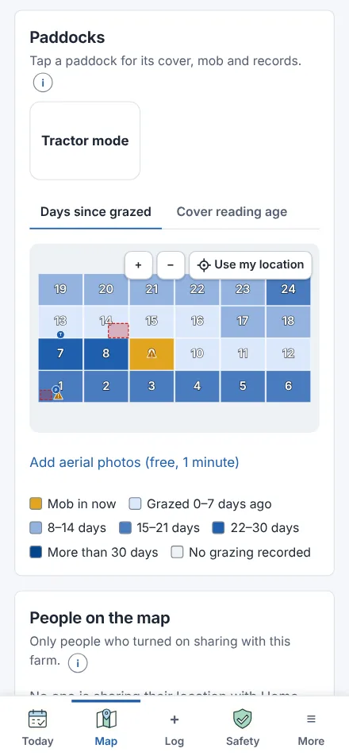
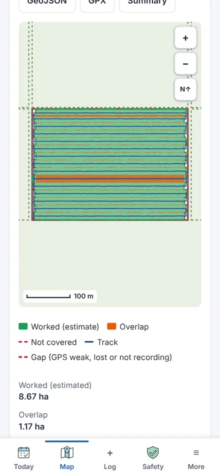
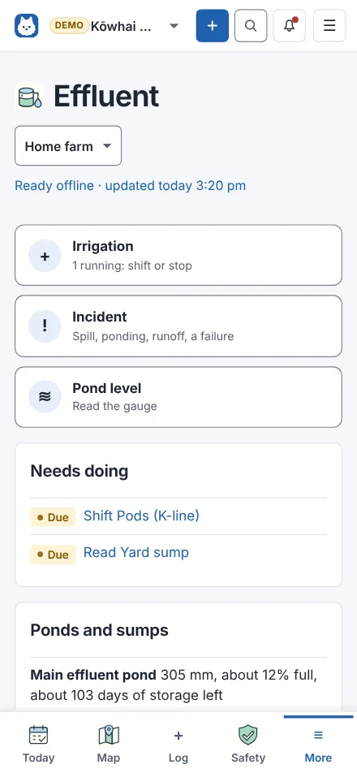
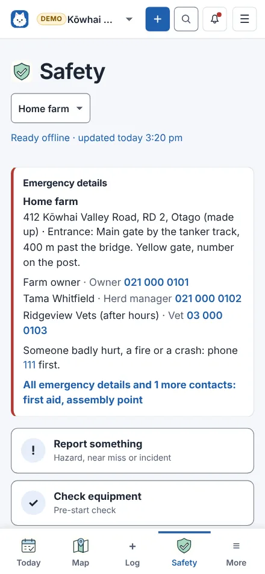

Accounting
Invoices, bills, bank feeds, reconciliation and reports.
Open source · Made in New Zealand
Accounting, payroll, CRM, analytics and farm records. Free to use, on a computer you own.

Features
Invoices, bills, bank feeds, reconciliation and reports.
NZ payroll, with or without Accounting. Timesheets, rosters and projects.
Customers, leads, deals and follow-ups.
Report pages from your books, spreadsheets and databases. Present them in PowerPoint.
Maps, pasture, livestock, effluent and health and safety records.
Connect your own AI app. You choose what it can read and change.
Bank feeds or statement files. Match payments and set up bank rules.

Profit and loss, balance sheet, budgets and year-end statements. Click any figure to see what's behind it.

Report pages with charts and pictures. Share them with your team or a client.

GST returns worked out from your transactions.

Real screens. Fictional demo data. Screens may differ by release.
Farming
Maps, jobs and field records on your phone. Staff see only the farms they work on.





Some farm records can be made offline and sync when you're back in range.
A chat for each farm, with photos and voice notes.
Photos from security cameras, including 4G cameras, through a post box.
Phone features still need testing on real devices. There's an optional Android app; there's no iPhone app. Safety records don't certify compliance. See the phone guide.
Your server
AGPLv3. No subscription. Hardware and outside services may cost money.
Open it in a browser. Each organisation gets its own database.
Encrypted nightly backups and a recovery kit. Keep a copy off-site.
What's new
One worksheet for prepayments, income in advance and accruals, in place of the spreadsheet.
Pictures on the farm screens, search on invoices and bills, and a fix for Analytics on Windows.
Trust income tax, farm medicines on hand, and the excise refund on off-road petrol.
A chat for each farm, and an optional chat for the whole team.
Run Payroll without Accounting. Bring employees in from a spreadsheet.
Each Analytics report shows a picture of itself. One page per slide in PowerPoint.
Newer features have had less real-world testing. See all releases and the feature list.
A Windows 11 mini PC is enough. Which one?
Run the Windows installer and create your admin login.
Then add your own business and invite your people.
Latest server installer and release notes.
Early development. Check accounting results before relying on them.
No. Accounting, payroll, CRM and Analytics work for any business. Farming is a separate part you can turn on.
A Windows 11 mini PC with 16 GB RAM and a 500 GB SSD suits a small team. These are suggestions, not tested minimums. See the setup guide.
Yes, once remote access is set up. The setup guide covers it. You're responsible for updates, backups and secure access.
Yes, in the browser. Some farm records work offline. There's an optional Android app, but no iPhone app.
Connect your own AI app in Tohyee's AI settings. You pick the organisation and what it can do: read only, make drafts, or post changes.